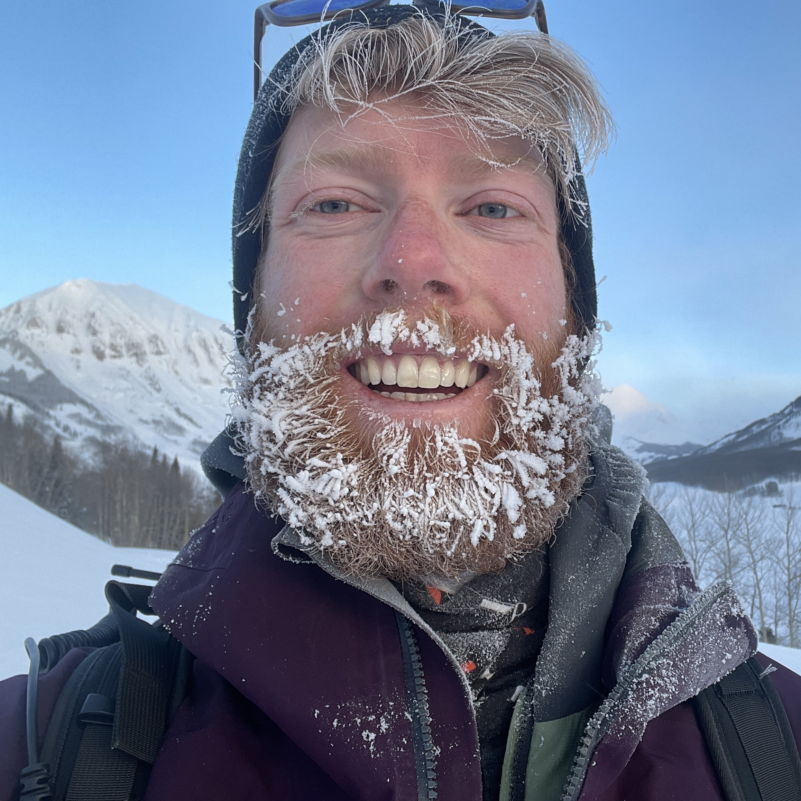
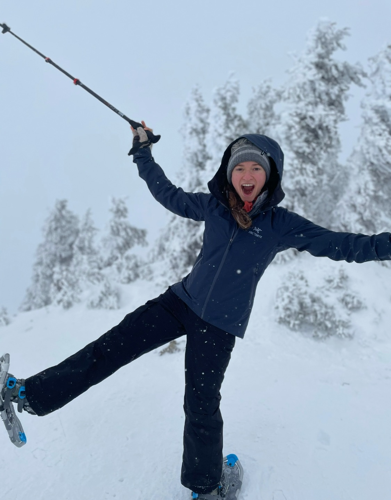

Danny Hogan
Forecaster & Founder
Danny is a PhD Candidate in the Mountain Hydrology Research Group at the University of Washington.
His current research interests focus on the interactions between the atmosphere and land surface in
mountainous regions, with an emphasis on snowpack dynamics and hydrological processes.

Grace Miles
Product & Social Media Manager
Grace is an avid outdoors-person who's always looking for her next nordic ski, snowboard, trail run,
or backcountry adventure. She leverages her product management expertise to strengthen website strategy,
website design, and social media outreach.